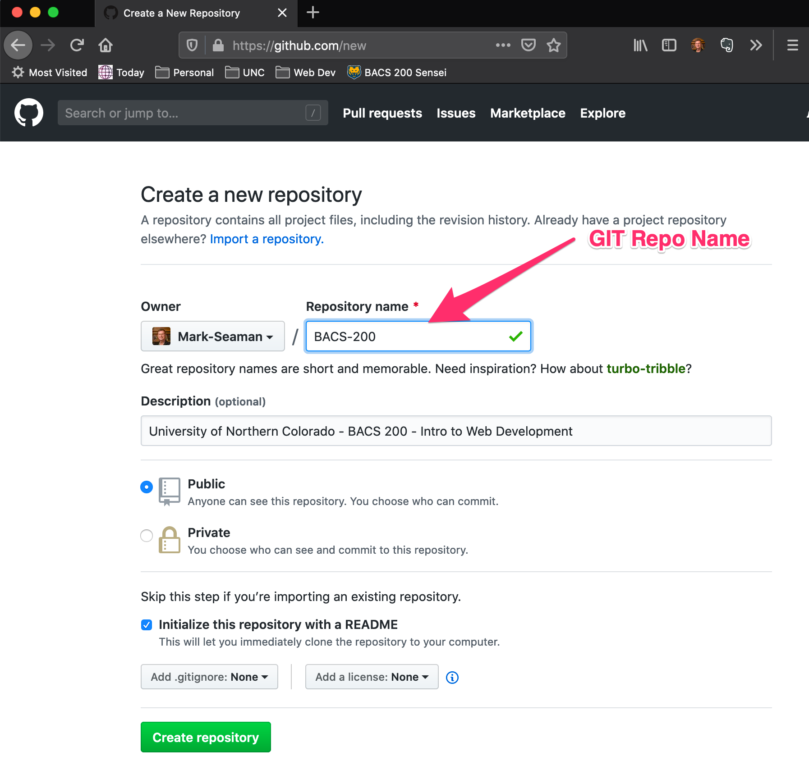
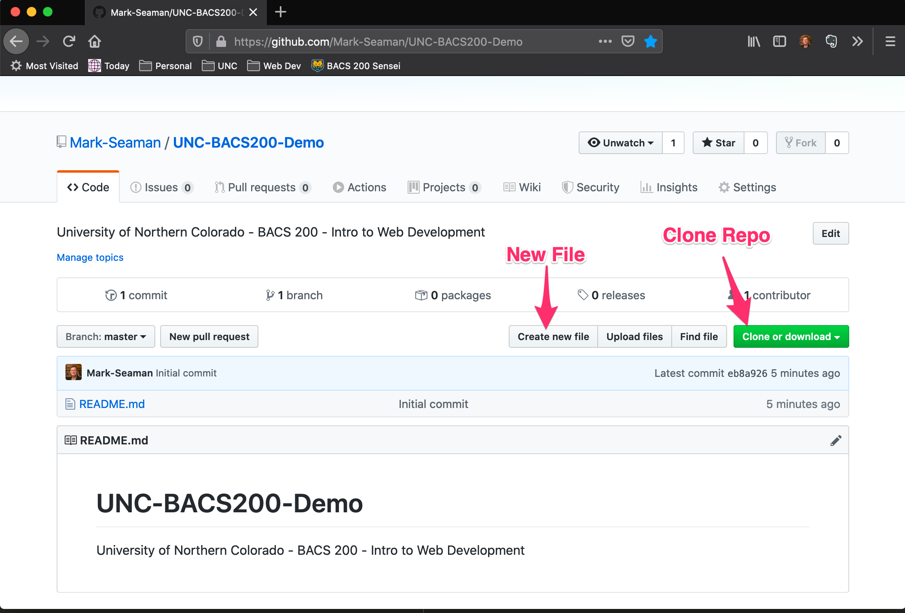
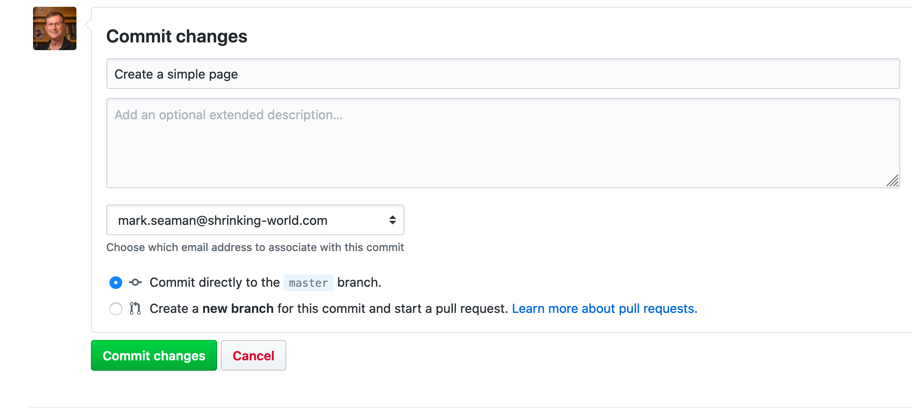

Create a Github Repo
All assignments will be completed using Github. You will need to create a repository in Github named "BACS-200". Your assignments will be turned in by committing changes to this code repo.
Log into Github
- Use your user id and password to access your Github account
- You should not have any repos since you are just starting out
Create a Repository
- Code is stored in a repository at Github
- Make it public (private repos require a paid account)
- Repo Name "BACS-200"
- Create a ReadMe file

Add a File
- Select repository
- Add File "BACS-200/03/page.html"

Edit Text of File
Edit File "BACS-200/01/page.html"
<h1>Simple Page</h1>
<p>This page has a headline and a paragraph.</p>Commit Your Change
- Tell github to save this version
